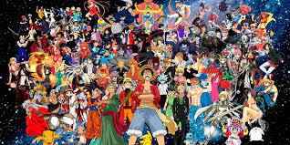

Anime
En sus inicios, la animación japonesa recibe el nombre de senga eiga
(literalmente “películas de líneas dibujadas”), más tarde se conocerá
con el término Doga (imágenes en movimiento) y, finalmente, sobre 1960
pasará a llamarse animeeshon originalmente . De ahí
que se abrevie a «anime» (???). Por otra parte se cree que es una palabra de
origen francés.El anime es un medio de gran expansión en Japón, siendo al mismo
tiempo un producto de entretenimiento comercial y cultural, lo que ha
ocasionado un fenómeno cultural en masas populares y una forma de arte tecnológico.?
Es potencialmente dirigido a todos los públicos, desde niños, adolescentes, adultos;
hasta especializaciones de clasificación esencialmente tomada de la existente para el
manga, con clases base diseñadas para especificaciones sociodemográficos tales como empleados,
amas de casa, estudiantes, etc. Por lo tanto, pueden hacer frente a los sujetos, temas y
géneros tan diversos como el amor, aventura, ciencia ficción, cuentos infantiles, literatura,
deportes, horror, fantasía, comedia y muchos otros.6?
El anime tradicionalmente es dibujado a mano y al principio los
procesos realizados de forma digital eran muy específicos (retoque y montaje).
Sin embargo, en la actualidad las tareas más comunes dentro de la producción de
una animación, como podría ser el coloreado o los efectos visuales (brillos, sombras,
luz ambiental, etc.), se hacen con aplicaciones digitales, que permiten un mayor
control sobre el trabajo y ayudan a agilizar la labor de los dibujantes a niveles
insospechados en un proceso de animación tradicional.? Sus guiones incluyen gran parte
de los géneros de ficción y son transmitidos a través de medios audiovisuales
(transmisión por televisión, distribución en formatos de vídeo doméstico y películas con audio).
La relación del anime con el manga es estrecha, pues la mayor parte de las historias de la series
animadas anime provienen del manga. Además, también guarda estrecha relación con las novelas gráficas
de origen japonés.
El anime es un medio diverso con métodos de producción distintivos que se
han adaptado en respuesta a las tecnologías emergentes. Combina arte gráfico,
caracterización, cinematografía y otras formas de técnicas imaginativas e individualistas.
En comparación con la animación occidental, la producción de anime generalmente se enfoca
menos en el movimiento y más en los detalles de la configuración y el uso de "efectos de cámara",
como la panorámica, el zoom y las tomas en ángulo.10? Desde la década de 1980, el medio también ha
tenido éxito internacional con el auge de la programación subtitulada y doblada en el extranjero y
su creciente distribución a través de servicios de transmisión. A partir de 2016, la animación
japonesa representó el 60% de los programas de televisión animados del mundo.
